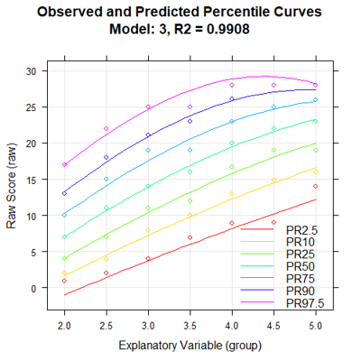

cNORM — Continuous Norming

This tool generates continuous test norms for psychometric and
biometric data using regression-based Taylor polynomials. It is
distribution-free and allows you to compute robust norm scores even with
moderate sample sizes per age (or grade) group. It is based on the
cNORM package
of the R plattform. For advanced functionality like weighting and fine-grained
setting (descending scores, types of bindings, predicting norm scorses for
complete new datasets based on existing models ...), please use
the cnorm function on the R console.
This GUI guides you through three short steps:
- Data – load an example or upload your own file.
- Modeling – pick the grouping variable (e. g. age groups,
grade ...), raw-score
variable, norm scale and polynomial degrees, then click
Run model. You can inspect the percentile plot,
the consistency check and the model-fit curve to choose the right
number of terms.
- Prediction – predict single norm/raw scores or generate
and download full norm tables. Diagnostic plots are available in
the Visualization tab and a stratified
Cross-validation can be run separately.
Required variables
- Grouping variable – e.g. age group, grade, year. Must be
numeric and meaningful (group mean is fine). Sidenote: If you have a
continuous variable like age, please use the
parametric modelling or the additional parameters available on the
R console.
- Raw-score variable – the test score to be normed.
Built-in example data sets
- elfe – reading-comprehension scores in primary school
(sentence-completion task, 0–28).
- ppvt – Peabody Picture Vocabulary Test IV norming sample,
ages 2.5–17.5, raw 0–228.
- CDC – epidemiological growth data (BMI, weight, height),
ages 2–18, from the CDC.
Model parameters at a glance
- k – polynomial degree of the location (norm score) term.
Higher values give a closer fit but risk overfitting (default 5).
- t – polynomial degree of the explanatory term (typically
age). Age trajectories are usually smooth, so 2–3 is enough.
- Number of terms – leave blank to auto-select model.
Otherwise specify a fixed value (look for the
“elbow” in the model-fit curve).
Privacy
When launched locally via cNORM.GUI(), all data stays on
your computer. The hosted version runs on shinyapps.io
(security & compliance); cNORM itself does not store
any uploaded data.
References
- R package cNORM (CRAN)
- Tutorial & manual
- Lenhard, A., Lenhard, W., Suggate, S. & Segerer, R. (2018).
A continuous solution to the norming problem. Assessment, 25,
112–125. doi:10.1177/1073191116656437
- Lenhard, A., Lenhard, W. & Gary, S. (2019). Continuous norming of
psychometric tests: A simulation study of parametric and
semi-parametric approaches. PLoS ONE, 14(9), e0222279.
- Lenhard, W. & Lenhard, A. (2021). Improvement of norm score
quality via regression-based continuous norming.
Educational and Psychological Measurement, 81(2), 229–261.
doi:10.1177/0013164420928457